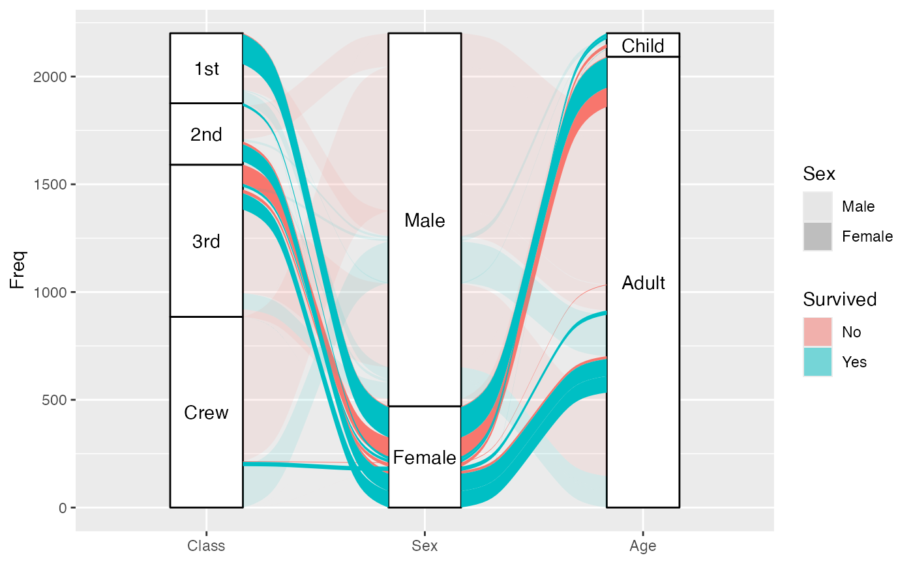
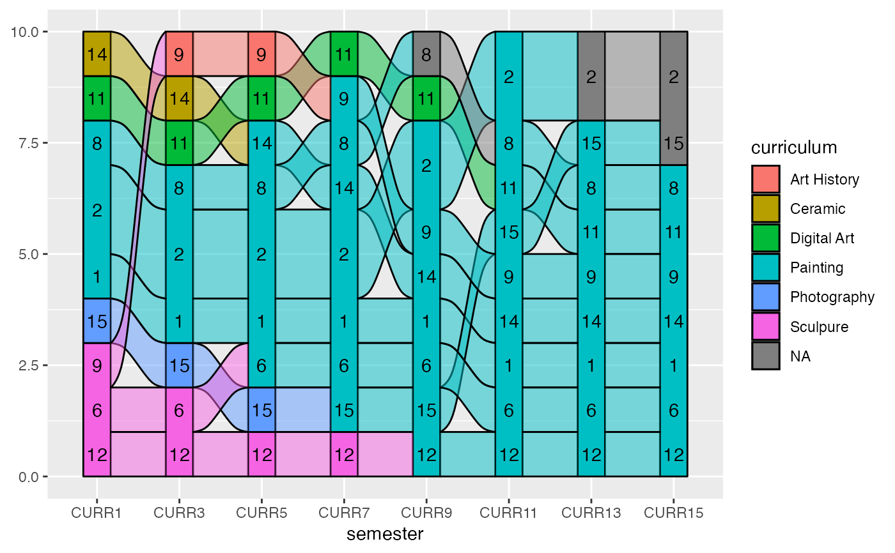
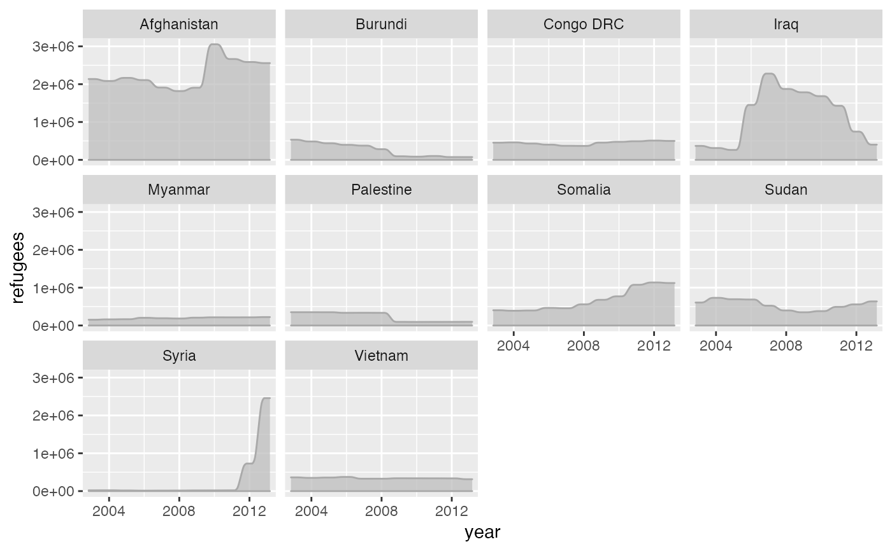

Alluvial positions
stat_alluvium.RdGiven a dataset with alluvial structure, stat_alluvium calculates the
centroids (x and y) of the lodes, the intersections of
the alluvia with the strata, together with their weights (heights;
ymin and ymax). It leverages the group aesthetic for
plotting purposes (for now).
stat_alluvium(mapping = NULL, data = NULL, geom = "alluvium", position = "identity", decreasing = NA, reverse = TRUE, discern = FALSE, aes.bind = FALSE, aggregate.y = FALSE, aggregate.wts = NULL, lode.guidance = "zigzag", lode.ordering = NULL, na.rm = FALSE, show.legend = NA, inherit.aes = TRUE, ...)
Arguments
| mapping | Set of aesthetic mappings created by |
|---|---|
| data | The data to be displayed in this layer. There are three options: If A A |
| geom | The geometric object to use display the data; override the default. |
| position | Position adjustment, either as a string, or the result of a call to a position adjustment function. |
| decreasing | Logical; whether to arrange the strata at each axis
in the order of the variable values ( |
| reverse | Logical; if |
| discern | Passed to |
| aes.bind | Whether to prioritize aesthetics before axes (other than the
index axis) when ordering the lodes within each stratum. Defaults to
|
| aggregate.y | Whether to aggregate weights across otherwise equivalent
rows before computing lode and flow positions. Set to |
| aggregate.wts | Defunct alias for |
| lode.guidance | The function to prioritize the axis variables for
ordering the lodes within each stratum, or else a character string
identifying the function. Character options are "zigzag", "frontback",
"backfront", "forward", and "backward" (see |
| lode.ordering | A list (of length the number of axes) of integer vectors
(each of length the number of rows of |
| na.rm | Logical:
if |
| show.legend | logical. Should this layer be included in the legends?
|
| inherit.aes | If |
| ... | Additional arguments passed to |
Aesthetics
stat_alluvium, stat_flow, and stat_stratum require one
of two sets of aesthetics:
xand at least one ofalluviumandstratumany number of
axis[0-9]*(axis1,axis2, etc.)
Use x, alluvium, and/or stratum for data in lodes format
and axis[0-9]* for data in alluvia format (see alluvial-data).
Arguments to parameters inconsistent with the format will be ignored.
Additionally, each stat_* layer accepts the following optional
aesthetics:
ygroup
y controls the heights of the alluvia
and may be aggregated across equivalent observations.
group is used internally; arguments are ignored.
Finally, stat_stratum accepts the following optional aesthetic:
label
label is used to label the strata and must take a unique value across
the observations within each stratum.
These and any other aesthetics are aggregated as follows:
Numeric aesthetics, including y, are summed.
Character and factor aesthetics, including label,
are assigned to strata provided they take unique values across the
observations within each stratum (otherwise NA is assigned).
See also
ggplot2::layer() for additional arguments and geom_alluvium(),
geom_lode(), and geom_flow() for the corresponding geoms.
Other alluvial stat layers: stat_flow,
stat_stratum
Examples
# illustrate positioning ggplot(as.data.frame(Titanic), aes(y = Freq, axis1 = Class, axis2 = Sex, axis3 = Age, color = Survived)) + stat_stratum(geom = "errorbar") + geom_line(stat = "alluvium") + stat_alluvium(geom = "pointrange") + geom_text(stat = "stratum", label.strata = TRUE) + scale_x_discrete(limits = c("Class", "Sex", "Age"))gg <- ggplot(as.data.frame(Titanic), aes(y = Freq, axis1 = Class, axis2 = Sex, axis3 = Age)) + geom_stratum() + geom_text(stat = "stratum", label.strata = TRUE) + scale_x_discrete(limits = c("Class", "Sex", "Age")) # use of lode controls gg + geom_flow(aes(fill = Survived, alpha = Sex), stat = "alluvium", lode.guidance = "forward")#> Warning: Using alpha for a discrete variable is not advised.# prioritize aesthetic binding gg + geom_flow(aes(fill = Survived, alpha = Sex), stat = "alluvium", aes.bind = TRUE, lode.guidance = "forward")#> Warning: Using alpha for a discrete variable is not advised.# use of lode ordering lode_ord <- replicate(n = 3, expr = sample(x = 32), simplify = FALSE) print(lode_ord)#> [[1]] #> [1] 14 23 12 10 22 6 19 4 27 25 24 2 13 17 15 32 8 7 30 16 20 31 3 9 28 #> [26] 21 1 29 11 18 5 26 #> #> [[2]] #> [1] 12 14 5 1 21 3 32 17 24 26 11 4 16 9 10 28 25 19 15 2 29 8 18 6 30 #> [26] 20 31 27 22 13 23 7 #> #> [[3]] #> [1] 24 15 6 22 3 32 16 14 8 11 12 4 23 2 5 21 18 25 7 20 13 26 1 17 30 #> [26] 28 9 29 27 19 10 31 #>#> Warning: Using alpha for a discrete variable is not advised.# fixed lode ordering across axes gg + geom_flow(aes(fill = Survived, alpha = Sex), stat = "alluvium", lode.ordering = lode_ord[[1]])#> Warning: Using alpha for a discrete variable is not advised.# use of custom luide guidance function lode_custom <- function(n, i) { stopifnot(n == 3) switch( i, `1` = 1:3, `2` = c(2, 3, 1), `3` = 3:1 ) } gg + geom_flow(aes(fill = Survived, alpha = Sex), stat = "alluvium", aes.bind = TRUE, lode.guidance = lode_custom)#> Warning: Using alpha for a discrete variable is not advised.gg + geom_flow(aes(fill = Survived, alpha = Sex), stat = "alluvium", aes.bind = TRUE, lode.guidance = "custom")#> Warning: Using alpha for a discrete variable is not advised.#> Warning: Computation failed in `stat_alluvium()`: #> object 'lode_custom' not founddata(majors) # omit missing lodes and incident flows ggplot(majors, aes(x = semester, stratum = curriculum, alluvium = student)) + geom_alluvium(fill = "darkgrey", na.rm = TRUE) + geom_stratum(aes(fill = curriculum), color = NA, na.rm = TRUE) + theme_bw()# reverse the vertical axis (requires an explicit `y` aesthetic) ggplot(majors, aes(x = semester, stratum = curriculum, alluvium = student, y = 1)) + geom_alluvium(fill = "darkgrey", na.rm = TRUE) + geom_stratum(aes(fill = curriculum), color = NA, na.rm = TRUE) + theme_bw() + scale_y_reverse()gg <- ggplot(majors, aes(x = semester, stratum = curriculum, alluvium = student, fill = curriculum)) + geom_stratum() # diagram with outlined alluvia and forward-colored flows gg + geom_flow(stat = "alluvium", lode.guidance = "frontback", color = "black")# same diagram with students are aggregated into cohorts gg + geom_flow(stat = "alluvium", lode.guidance = "frontback", color = "black", aggregate.y = TRUE)# irregular spacing between axes of a continuous variable data(Refugees, package = "alluvial") refugees_sub <- subset(Refugees, year %in% c(2003, 2005, 2010, 2013)) ggplot(data = refugees_sub, aes(x = year, y = refugees, alluvium = country)) + geom_alluvium(aes(fill = country), alpha = .75, decreasing = FALSE, knot.pos = 1) + geom_stratum(aes(stratum = country), decreasing = FALSE, width = 1/2) + theme_bw() + scale_fill_brewer(type = "qual", palette = "Set3")#> Warning: Ignoring unknown aesthetics: stratum# NOT RUN { data(babynames, package = "babynames") # a discontiguous alluvium bn <- dplyr::filter(babynames, prop >= .01 & sex == "F" & year > 1962 & year < 1968) ggplot(data = bn, aes(x = year, alluvium = name, y = prop)) + geom_alluvium(aes(fill = name, color = name == "Tammy"), decreasing = TRUE, show.legend = FALSE) + scale_color_manual(values = c("#00000000", "#000000")) # filling in missing zeros bn2 <- merge(bn, expand.grid(year = unique(bn$year), name = unique(bn$name)), all = TRUE) bn2$prop[is.na(bn2$prop)] <- 0 ggplot(data = bn2, aes(x = year, alluvium = name, y = prop)) + geom_alluvium(aes(fill = name, color = name == "Tammy"), decreasing = TRUE, show.legend = FALSE) + scale_color_manual(values = c("#00000000", "#000000")) # }